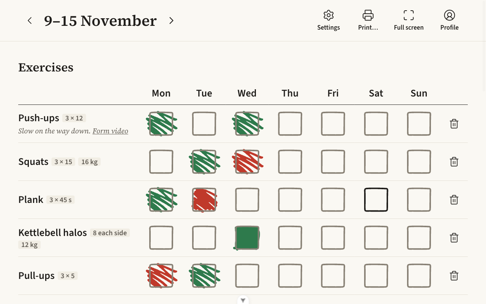
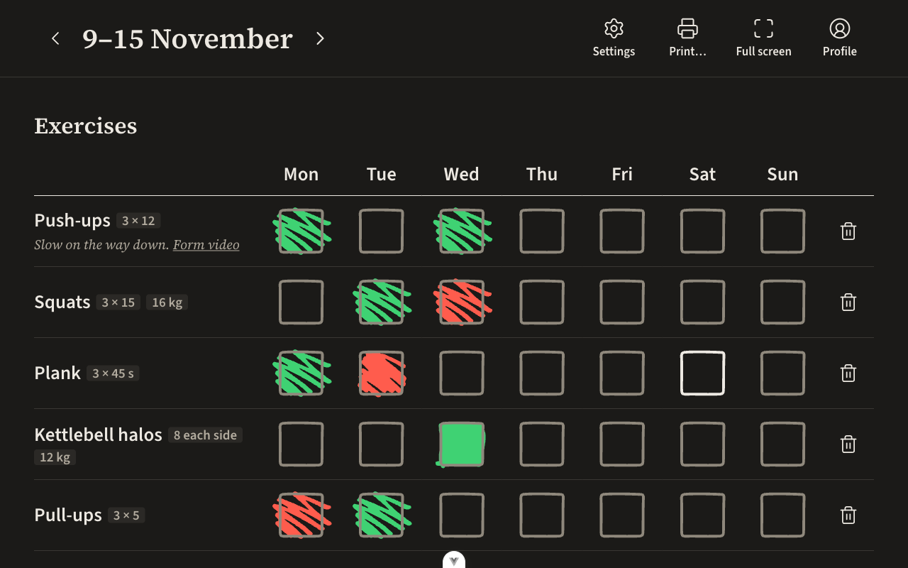
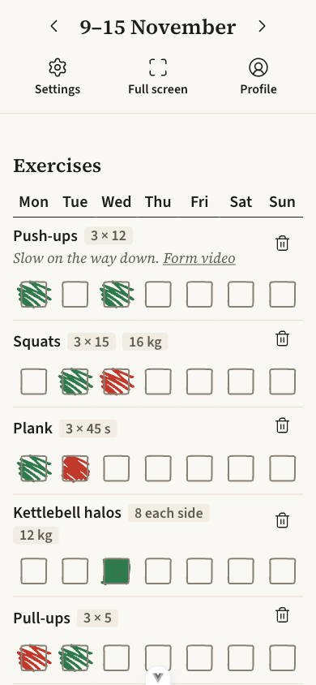
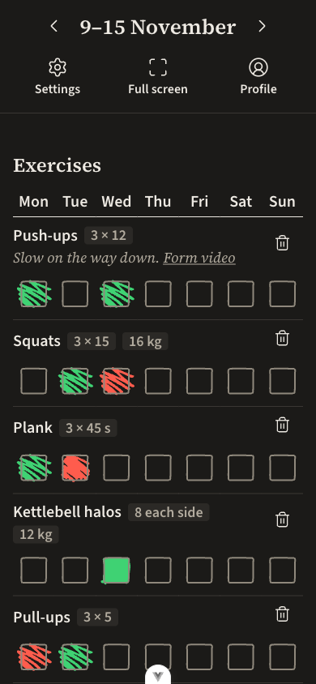

<title>Edit plan frame</title>
<meta name="claude:viewport-fit-sides" content="cover">
<link rel="stylesheet" href="tokens.css">
<!--
  A mockup (design-system skill, references/mockups.md). Fill in, top to bottom:
  1. The question: one sentence, and what stays as it is.
  2. One <section class="option"> per option, two to four, lettered A, B, C. Mark one
     data-recommended. Each changes only what the question is about.
  3. Every proposed value as a --candidate-* custom property on its option (see the style block); everything
     else from the system's tokens (var(--ink)), type classes (.body, .caption) and real copy.
  4. The stage: the real screen or component the change lands in, at its real size, once per
     theme (the two .pane elements). Add a close-up only beside it, never instead of it.
  5. Measures: one <li data-fg data-bg data-min> per new colour pairing; the page computes them.
  The frame (.mockup-*) is plain on purpose; the options are the design.
-->
<style>
  body { margin: 0; background: var(--canvas); color: var(--ink); font-family: var(--font-sans); }
  .mockup-page {
    padding-left: max(16px, env(safe-area-inset-left, 0px));
    padding-right: max(16px, env(safe-area-inset-right, 0px));
    padding-block: var(--space-8, 32px) var(--space-16, 64px);
    max-width: 1200px; margin: 0 auto; display: grid; gap: var(--space-12, 48px);
  }
  .mockup-head { display: grid; gap: var(--space-2, 8px); max-width: 70ch; }
  .mockup-head h1, .option h2 { margin: 0; text-wrap: balance; }
  .mockup-head p, .option p { margin: 0; }
  .mockup-meta { color: var(--ink-secondary); }
  .option { display: grid; gap: var(--space-4, 16px); }
  .option-head { display: flex; flex-wrap: wrap; align-items: baseline; gap: var(--space-2, 8px) var(--space-3, 12px); }
  .option-tag { color: var(--ink-secondary); }
  .option[data-recommended] .option-tag::after { content: " · Recommended"; color: var(--ink); }
  /* The same stage in light and in dark, side by side; stacked on a phone. Each pane is a
     data-theme subtree, so the system's own tokens switch inside it. */
  .panes { display: grid; grid-template-columns: repeat(auto-fit, minmax(min(100%, 420px), 1fr)); gap: var(--space-4, 16px); }
  .pane { min-width: 0; background: var(--canvas); color: var(--ink); border: 1px solid var(--line);
          border-radius: var(--radius-lg, 10px); padding: var(--space-4, 16px); overflow-x: auto; }
  .pane-label { color: var(--ink-secondary); margin: 0 0 var(--space-3, 12px); }
  .measures { margin: 0; padding: 0; list-style: none; display: flex; flex-wrap: wrap; gap: var(--space-2, 8px); }
  .measures li { border: 1px solid var(--line); border-radius: var(--radius-sm, 4px); padding: 2px var(--space-2, 8px); font-variant-numeric: tabular-nums; }
  .measures li[data-pass="no"] { border-color: currentColor; }
  :focus-visible { outline: 2px solid var(--focus); outline-offset: 2px; }

  /* ---- The options' own styles. ---- */
  .mockup-page { max-width: 1360px; }
  .panes { grid-template-columns: minmax(0, 1fr); }
  .phones { min-width: 0; }
  .phones { display: flex; flex-wrap: wrap; gap: var(--space-4, 16px); }
  /* A screenshot of the real app in Edit plan at real size, the frame drawn over it as the app
     would draw it: fixed to the window's edges, over everything, click-through. */
  .shot { position: relative; display: inline-block; line-height: 0; }
  .shot img { display: block; max-width: none; }
  .shot::after { content: ""; position: absolute; inset: 0; pointer-events: none;
                 box-shadow: inset 0 0 0 var(--candidate-width) var(--candidate-edit); }
  #a, #a [data-theme], #b, #b [data-theme] { --candidate-edit: #2563c9; }
  #a [data-theme="dark"], #b [data-theme="dark"] { --candidate-edit: #6b9ef2; }
  #c, #c [data-theme] { --candidate-edit: var(--focus); }
  #a, #a [data-theme], #c, #c [data-theme] { --candidate-width: 4px; }
  #b, #b [data-theme] { --candidate-width: 8px; }
</style>

<main class="mockup-page">
  <header class="mockup-head">
    <p class="caption mockup-meta">Mockup · 2026-11-11 · Tracker</p>
    <h1 class="title-1">Edit plan frame</h1>
    <p class="body">Which frame round the window says Edit plan is on? It sits on the window's four
      edges, over the bar, and lets every press through. The page under it stays as it is.</p>
    <p class="body">Each picture is the real app in Edit plan at real size. On a narrow screen,
      scroll a desktop picture sideways.</p>
  </header>

  <section class="option" id="a" data-recommended aria-labelledby="a-h">
    <div class="option-head">
      <h2 class="title-2" id="a-h">A. A new Edit blue, 4px</h2>
      <span class="label option-tag">Option A</span>
    </div>
    <p class="body">A new colour role, <code>edit</code>: #2563c9 in light, #6b9ef2 in dark, 4px wide. A brighter blue than the focus ring, so the two never read as one thing.</p>
    <ul class="measures caption">
      <li data-fg="var(--candidate-edit)" data-bg="var(--canvas)" data-min="3">Frame on the page</li>
    </ul>
    <div class="panes">
      <div class="pane" data-theme="light"><p class="label pane-label">Light · 1280 × 800</p>
        <span class="shot"></span></div>
      <div class="pane" data-theme="dark"><p class="label pane-label">Dark · 1280 × 800</p>
        <span class="shot"></span></div>
      <div class="phones">
        <div class="pane" data-theme="light"><p class="label pane-label">Light · phone</p>
          <span class="shot"></span></div>
        <div class="pane" data-theme="dark"><p class="label pane-label">Dark · phone</p>
          <span class="shot"></span></div>
      </div>
    </div>
  </section>

  <section class="option" id="b" aria-labelledby="b-h">
    <div class="option-head">
      <h2 class="title-2" id="b-h">B. The new Edit blue, 8px</h2>
      <span class="label option-tag">Option B</span>
    </div>
    <p class="body">The same <code>edit</code> blue as A, twice as wide: harder to miss, and it covers 8px of each edge.</p>
    <ul class="measures caption">
      <li data-fg="var(--candidate-edit)" data-bg="var(--canvas)" data-min="3">Frame on the page</li>
    </ul>
    <div class="panes">
      <div class="pane" data-theme="light"><p class="label pane-label">Light · 1280 × 800</p>
        <span class="shot"></span></div>
      <div class="pane" data-theme="dark"><p class="label pane-label">Dark · 1280 × 800</p>
        <span class="shot"></span></div>
      <div class="phones">
        <div class="pane" data-theme="light"><p class="label pane-label">Light · phone</p>
          <span class="shot"></span></div>
        <div class="pane" data-theme="dark"><p class="label pane-label">Dark · phone</p>
          <span class="shot"></span></div>
      </div>
    </div>
  </section>

  <section class="option" id="c" aria-labelledby="c-h">
    <div class="option-head">
      <h2 class="title-2" id="c-h">C. The focus blue, 4px</h2>
      <span class="label option-tag">Option C</span>
    </div>
    <p class="body">No new colour: the focus ring's blue (#2b4c7e in light, #9db8e8 in dark), 4px. This breaks the system's rule that a colour means one thing, because the frame and a focused button would share it.</p>
    <ul class="measures caption">
      <li data-fg="var(--candidate-edit)" data-bg="var(--canvas)" data-min="3">Frame on the page</li>
    </ul>
    <div class="panes">
      <div class="pane" data-theme="light"><p class="label pane-label">Light · 1280 × 800</p>
        <span class="shot"></span></div>
      <div class="pane" data-theme="dark"><p class="label pane-label">Dark · 1280 × 800</p>
        <span class="shot"></span></div>
      <div class="phones">
        <div class="pane" data-theme="light"><p class="label pane-label">Light · phone</p>
          <span class="shot"></span></div>
        <div class="pane" data-theme="dark"><p class="label pane-label">Dark · phone</p>
          <span class="shot"></span></div>
      </div>
    </div>
  </section>

</main>

<script>
  // Measures: for each <li data-fg data-bg data-min>, the WCAG contrast of the two colours in each
  // theme, resolved inside the option (so --candidate-* values apply), written after the label.
  (() => {
    const rgb = (value, scope, theme) => {
      const probe = document.createElement('span')
      probe.dataset.theme = theme
      probe.style.color = value
      scope.append(probe)
      const parts = getComputedStyle(probe).color.match(/[\d.]+/g).map(Number)
      probe.remove()
      return parts.slice(0, 3)
    }
    const lum = ([r, g, b]) => [r, g, b]
      .map((c) => { c /= 255; return c <= 0.03928 ? c / 12.92 : ((c + 0.055) / 1.055) ** 2.4 })
      .reduce((sum, c, i) => sum + c * [0.2126, 0.7152, 0.0722][i], 0)
    const ratio = (a, b) => { const [hi, lo] = [lum(a), lum(b)].sort((x, y) => y - x); return (hi + 0.05) / (lo + 0.05) }
    for (const li of document.querySelectorAll('.measures li[data-fg]')) {
      const scope = li.closest('.option') || document.body
      const min = Number(li.dataset.min || 0)
      const results = ['light', 'dark'].map((theme) => {
        const r = ratio(rgb(li.dataset.fg, scope, theme), rgb(li.dataset.bg, scope, theme))
        return { theme, r, ok: !min || r >= min }
      })
      li.dataset.pass = results.every((x) => x.ok) ? 'yes' : 'no'
      li.append(`: ${results.map((x) => `${x.theme} ${x.r.toFixed(1)}:1${x.ok ? '' : ' (below ' + min + ':1)'}`).join(', ')}`)
    }
  })()
</script>
